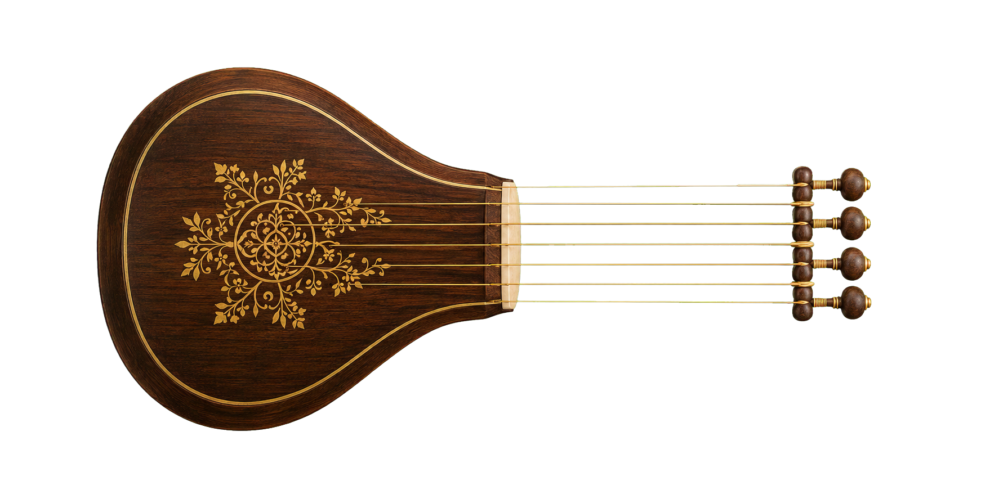

Now exploring
Yaman
An evening raag of devotion and luminous calm
Tap to hear the swaras08:32
Indian classical music, made visible
Explore raagas, understand their soul, and elevate your voice through mindful, visual practice.
Now exploring
An evening raag of devotion and luminous calm
Living pitch studio
Choose a musical idea, set your Sa, and sing. Your live pitch appears against the raag’s intended movement—not just the nearest Western note.
Yaman · PakadNi Re Ga · Re Sa · Pa Mā Ga Re Sa

Play notes, match comfortably, then set that pitch above.
Raag library
The grammar of expression
Swaras tell you where the melody is. Ornamentation tells you how it moves. Each concept includes a visual gesture and a focused vocal exercise.
A continuous glide that connects two swaras without breaking the breath.
A slow, deliberate oscillation around a swara that gives a raag its gravity.
A forceful, controlled oscillation produced with clear rhythmic energy.
A grace note touched briefly before arriving at the intended swara.
Adaptive Riyaz path
Choose your focus and RaagaRhythms reshapes the session—from tuning your Sa to applying the phrase in a real musical context.
Tanpura + long-note centering
Sa · Ga · Pa visual holds
Meend through the Pakad
Compare target and recorded contour
Your practice journal
Save a snapshot of today’s Raag, goal, steadiness, and pitch contour locally on this device.